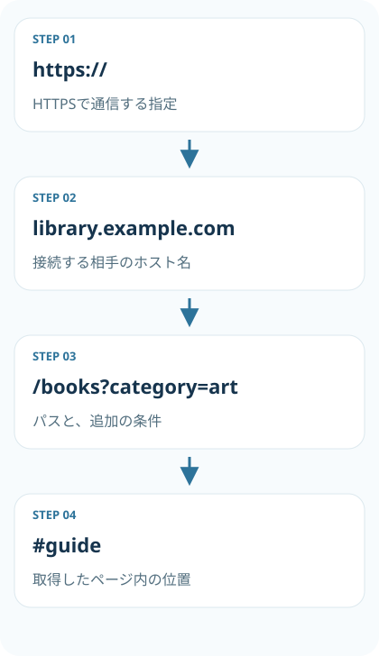

友人から届いた長いリンクを見て、「どこまでがサイト名なの？」と迷ったことはありませんか。URLは、Web上の情報を指定するための表し方です。全部を暗記する必要はありません。今回は架空の図書館サイトを例に、リンクの文字列を役割ごとに区切ってみます。
01 — DIGITAL BASICS
URLは「どの情報を開くか」を伝える
URLはUniform Resource Locatorの略です。Webページだけでなく、画像などの情報にもURLがあります。ブラウザはURLを手がかりに、どの相手へ、どの情報を求めるかを判断します。リンクの見た目の文章と、実際に設定されている行き先は別なので、ページに書かれた名前だけでは行き先を確かめられません。
説明用に https://library.example.com/books?category=art#guide というURLを使います。これは実在のサービスを紹介するためのリンクではなく、文字の役割を確認するための例です。先頭から順に見ると、通信の方法、接続先、求める情報、追加の条件、ページ内の位置に分けられます。
この節の参考：資料1
02 — DIGITAL BASICS
先頭のhttpsと、接続先の名前
httpsはスキームという部分で、この例ではHTTPSという方法で通信することを表します。その後の :// を挟み、library.example.com が接続先のホスト名です。ホスト名にはドメイン名が使われることが多く、ここで「どの相手へ」という部分が決まります。
同じホスト名の後ろに違うパスが付けば、同じサイト内の別の情報を指定できます。一方、文章の途中に見慣れた名前が含まれているだけでは、その名前のサイトとは限りません。URL全体の雰囲気より、接続先を表す部分を区切って読むことが大切です。
この節の参考：資料1

03 — DIGITAL BASICS
/、?、#は、それぞれ役割が違う
/booksはパスです。サーバー側でどの情報を扱うかを指定します。見た目はフォルダーの道順に似ていますが、そのまま保存場所のフォルダー構造を表すとは限りません。サーバー側のプログラムが、このパスに対応する内容を作る場合もあります。
?category=artはクエリーです。この例では「分類はart」という条件を添えるイメージです。ただし、どんな項目名を使い、どう扱うかはサイト側の設計によって変わります。条件を勝手に削っても同じ画面になるとは限りません。
#guideはフラグメントで、ページ内の一部分を指定します。通常のページ取得ではこの部分はサーバーへ送られず、取得後にブラウザ側で扱います。対応する見出しへ移動する使い方などがあります。ページ上のプログラムが別途この値を読む場合はあるため、「誰にも伝わらない秘密の領域」と考えるのは適切ではありません。
04 — DIGITAL BASICS
長いURLは、全部理解してから開くもの？
一つのURLに、今日出てきた部分が全部そろっている必要はありません。クエリーやフラグメントがない、短いURLもあります。逆に多くの条件が付くこともあります。文字数が長いか短いかだけでは、内容の正しさや相手の信頼性は判断できません。
まずは接続先の名前と、その後のパスを見分けられれば十分な一歩です。自分で入力した覚えのない個人情報がURLに含まれていれば、そのまま人に共有しないよう一度立ち止まる、という使い方にもつながります。URLを「ただの長い文字列」から、意味のあるパーツの集まりとして眺めてみましょう。
REMEMBER
今日覚えておきたい3つのこと
- 01
URLは、ページや画像などの情報を指定するための表し方。
- 02
ホスト名は接続先、パスは求める情報を指定する部分。
- 03
クエリーとフラグメントは役割も扱われ方も違う。
参考資料・情報確認日
情報確認日：2026年11月18日。通信の基本を理解するために一部を簡略化しています。